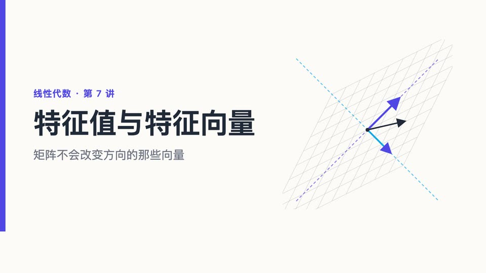
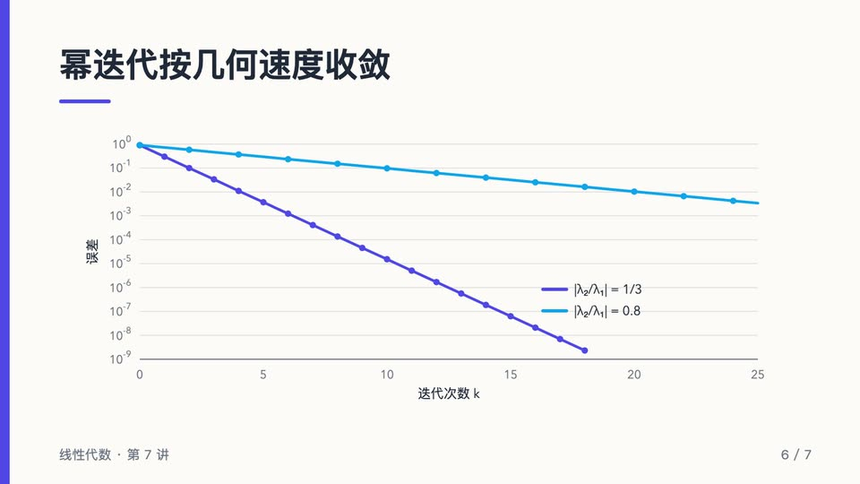
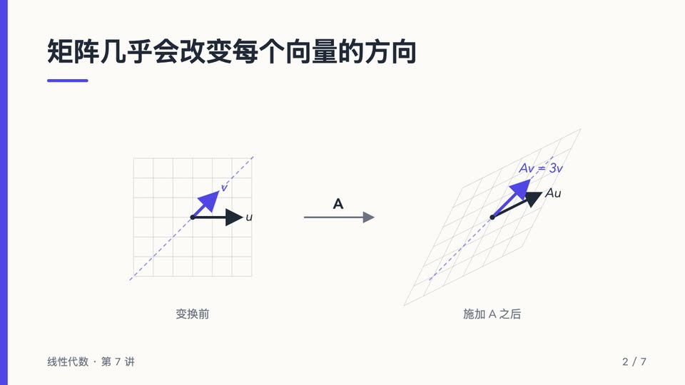
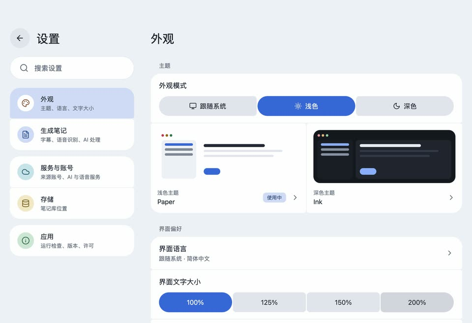

有字幕先用字幕
视频自带字幕时直接使用，无需语音识别。
看过的课，随时翻得回来
course2md 把一整节课整理成一份图文讲义：画面一换就截一张图，下面是老师讲这一页时说的话。YouTube 和 Bilibili 的视频，每一节都能跳回原视频的那一刻。
每页幻灯片一张截图，下面是老师讲的话。



“但再看沿对角线方向的 v。变换之后，它仍然落在同一条虚线上。”
示例课程为本页制作，频道和视频均为虚构。
视频自带字幕时直接使用，无需语音识别。
只看 PPT 看不懂推导，只看字幕又没有图。在这里，每张截图下面就是老师讲这一页时说的话。
开启 AI 后，公式（包括口述的）会写成 LaTeX 并排版显示；复制时保留原始 LaTeX。
AI 可以在每段下方附上译文，支持八种语言。
任意 OpenAI 兼容服务、本机 Ollama 或你的 ChatGPT 订阅。默认关闭。
Bilibili 多 P 视频和播放列表可以一次多选加入队列。任务在后台运行，可以暂停、继续和调整顺序。
普通的 Markdown 文件加截图，存在你电脑上的笔记库里，支持嵌套文件夹和按标题搜索，随时可以导出网页。不用注册账号。
10 套浅色和深色主题、可调字号，界面支持 English、简体中文、繁體中文和日本語。

语音识别默认在本机完成。只有你主动选择云端语音服务或 AI 服务时，才会把音频或文字发送出去。
桌面版自带转换引擎，另外需要 ffmpeg。第一次在本机识别语音时会下载 1–2.4 GB 的语音模型。
2.0course2md 2.0 重做了桌面应用：先预览再转换、可暂停和调整顺序的后台任务、带文件夹的笔记库、公式排版的阅读器，以及四种界面语言。发布说明
brew install --cask mizorewww/tap/course2md-gui
winget install --id Gyan.FFmpeg -e
yay -S course2md-gui-bin
安装细节见安装指南。
命令行版做同样的转换，可以和桌面版同时安装：两者共用 Bilibili、ChatGPT 登录和已下载的语音模型，设置各自独立。适合批量处理、写脚本，也能在 Intel Mac 和 Linux ARM64 上运行。
curl -fsSL https://raw.githubusercontent.com/mizorewww/course2md/main/install.sh | bash
命令行使用说明
免费。course2md 以 MIT 许可证开源，不需要账号，没有订阅和广告。
不需要。只有你选择使用的服务才需要登录：部分 Bilibili 视频需要 Bilibili 账号，开启 AI 时需要相应的 AI 服务。
AI 是可选的，默认关闭。使用 OpenAI 兼容服务时按用量向该服务付费；本机 Ollama 不花钱；ChatGPT 订阅可以通过导入 Codex 登录使用。course2md 本身不收费。
存在你电脑上的笔记库文件夹里：每篇笔记是一个 course.md 文件加上它的截图，随时可以导出网页、.zip 或 JSON。可以在「设置 → 存储」添加其他文件夹。服务密钥保存在系统钥匙串。除非你选择云端语音或 AI 服务，否则不会上传任何内容。
Apple 芯片约 1–2.3 GB，其他平台约 2.4 GB，只需下载一次。在中国大陆从国内镜像下载，中断后可以续传。
在「设置 → 服务与账号 → Bilibili 账号」扫码登录。